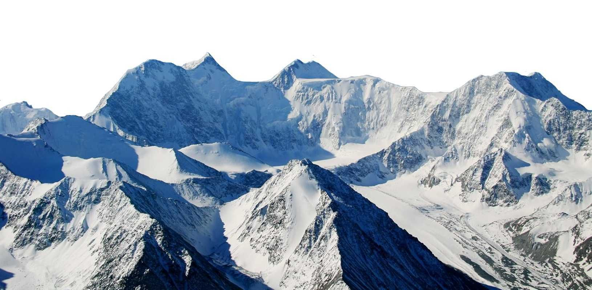

Стратегия роста Instagram и Telegram «Горного Портала» на 12 месяцев
Полина Данилова · SMM и контент-продюсер · ноябрь 2026
Подписчики не цель.
Цель — заявки и выручка.
Соцсети работают как вход в воронку продаж, а не как витрина ради цифры в профиле.
Instagram приводит новых людей. Telegram превращает их в участников экспедиций.
Каждое действие в плане привязано к метрике заявки, стоимости клиента или выручки.
Что уже сильно
Что вижу в аудите
Главная потеря аудитории происходит между площадками. Её и закрываем первой.
= +9,6% подписчиков
каждый месяц
= +12,2% подписчиков
каждый месяц
Из чего собираем рост · доли — гипотеза до аудита
Одной органикой ×3–4 за год не получится. Рост держим каждый месяц, даже в межсезонье.
| Сегмент | Кто это | Барьер | Что хочет увидеть | Вход в продукт |
|---|---|---|---|---|
| Первая высота | 28–45 лет, работают, спорт для себя, в больших горах не были | «Не потяну, страшно» | Подготовку, гидов, таких же новичков | Трекинги, Ликийская тропа, Эльбрус |
| Коллекционеры вершин | Уже были на Эльбрусе или Килиманджаро | «Надёжны ли гиды на высоте» | Экспертизу и безопасность | Аконкагуа, Island Peak, «7 вершин», 8000+ |
| Ищущие перемен | Выгорание, переломный момент, нужна перезагрузка | «А мне это поможет?» | Истории людей до и после | Кора вокруг Кайласа, Непал, Тибет |
| Семьи | Родители с детьми | «Безопасно ли детям» | Как устроен день, кто рядом | Семейные походы |
| Компании | HR и собственники | «Сложно организовать» | Готовый формат под ключ | Групповые выезды · гипотеза, уточнить |
Самый большой объём роста — первая высота. Им нужен не красивый вид, а ответ на страх.
Один гид на трёх участников и 13 лет опыта. Это ответ на главный страх.
Клуб, тренировки, живые истории участников вместо рекламных обещаний.
«В горы за трансформацией» — это уже голос компании. Усиливаем его историями.
Продаём не тур, а следующую ступень. Клиент Эльбруса — будущий клиент Килиманджаро.
| Направление | Задача | Форматы | Доля |
|---|---|---|---|
| Вершина и путь | Охват и вау | Reels с маршрутов, штурм, рассвет на высоте | 25% |
| Истории участников | Доверие, «я тоже смогу» | Интервью, до и после, видео самих участников | 25% |
| Экспертиза гидов | Снять страх | Подготовка, снаряжение, высотная болезнь, ошибки новичков | 20% |
| Закулисье и Клуб | Живой бренд | Тренировки, забеги, лагерь, гиды вне маршрута | 15% |
| Продукт | Продажа | Даты, программы, оплата долями, ранние места | 15% |
Пример недели в Instagram
ПН экспертный Reels
СР история участника
ПТ атмосфера
ВС продукт
Каждый день сторис
«Я офисный менеджер. Через 9 дней я стоял на Эльбрусе»
Первая высота · доверие
«Гид отвечает, что будет с тобой на 5000 метров»
Снять страх · сохранения
«Сколько на самом деле стоит Эльбрус»
Снять ценовой барьер · переход в Telegram
«5 вещей, которые новички зря берут в горы»
Сохранения и пересылки
«Рассвет на высоте 5642» без слов
Охват и рекомендации
«Какая вершина твоя? Тест в Telegram»
Переход в бот
Это примеры форматов. Героев берём из реальных участников.
витрина и охват
Рекламу и платные интеграции здесь не делаем. С 1.09.2025 это запрещено законом.
доверие и продажа
Ленты рекомендаций там нет. Подписчики приходят из Instagram через тест в боте, посевы в travel- и спорт-каналах, взаимные коллаборации и Telegram Ads.
охват
переходы
контакт
открытия, ответы
заявка
выручка
видео, отзыв
повторная покупка, «приведи друга»

Тест «Какая вершина твоя» в Telegram-боте. 5–7 вопросов, в ответ маршрут и запись на консультацию. У компании такого пока нет.
Сериал «С нуля до Эльбруса». Новичок 8–10 недель тренируется с Клубом и в финале идёт на вершину.
Чек-лист первого восхождения. Тренировки и снаряжение, выдаём в боте.
Блогеры в Telegram и VK. Спорт, бег, travel 10–100 тыс., место в экспедиции за серию контента.
Партнёры. Магазины снаряжения, беговые и трейл-клубы, фитнес-студии.
«Приведи друга». Бонус обоим на маршрут. Гипотеза, условия согласовать.
Новые даты сначала в Telegram. Повод подписаться. Гипотеза, согласовать.
Аконкагуа, Килиманджаро, новогодняя Ликийская тропа. Набор в программы следующего года.
Продажи летнего Эльбруса, Алтая, Кавказа, Непала.
Сезон. Максимум видео с маршрутов, сбор отзывов.
Итоги сезона, анонсы «Горы 2027».
Аудит, данные, сегменты, тон. UTM на все ссылки, единые цифры в профилях.
Reels 4–5 в неделю, бот с тестом, первые посевы.
рост охвата и переходов в ботСериал «С нуля до Эльбруса», продажи летнего сезона.
первые заявки по UTMСезон, видео участников, отзывы, «приведи друга».
растёт доля заявок из соцсетейМасштабируем то, что окупилось, анонсы нового года.
×3–4 и понятная цена заявкиМаркетинговые
Бизнес · главные
Все цифры — целевые ориентиры. Точные считаем после аудита.
Подписчики растут как следствие. Успех считаем по заявкам и выручке.
Без этих данных любые цифры остаются гипотезами. Стратегию уточняю за первый месяц.
Одна система.
Контент приводит, Telegram греет, участники возвращаются за следующей вершиной.
Все идеи предоставлены Даниловой Полиной Антоновной
Instagram @monargixx · Telegram @monargixx · +7 911 792-50-36